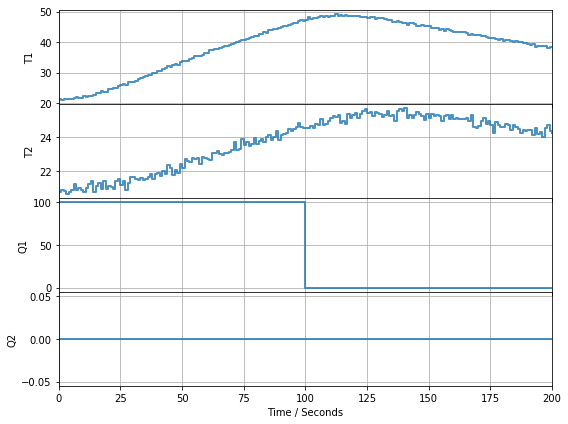
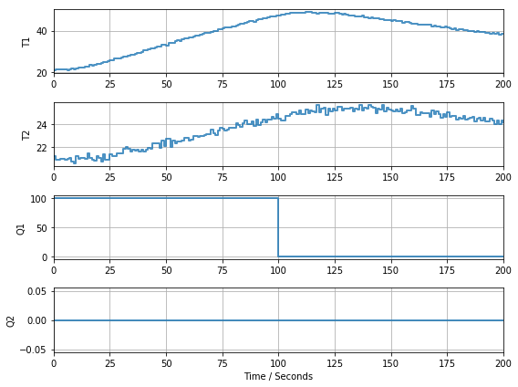
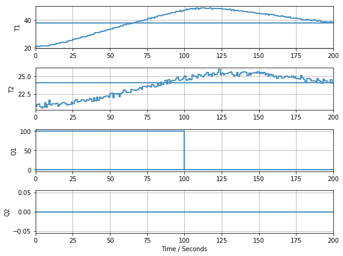

Simulation of TCLab for Offline Use¶
TCLabModel replaces TCLab for occasions where the TCLab hardware
might not be available. To use, include the import
from tclab import TCLabModel as TCLab
The rest of your code will work without change. Be advised the underlying model used to approximate the behavior of the Temperature Control Laboratory is an approximation to the dynamics of the actual hardware.
In [1]:
from tclab import TCLabModel as TCLab
with TCLab() as a:
print("Temperature 1: {0:0.2f} °C".format(a.T1))
print("Temperature 2: {0:0.2f} °C".format(a.T2))
As an additional example.
In [2]:
%matplotlib inline
from tclab import TCLabModel as TCLab
from tclab import clock, Historian, Plotter
with TCLab() as a:
h = Historian(a.sources)
p = Plotter(h, twindow=200)
for t in clock(200):
a.Q1(100 if t < 100 else 0)
p.update(t)

TCLab Model disconnected successfully.

Speedup Factor with setup()¶
The setup function provides control over the use of the TCLab hardware or model. If using a model, an option to run at a multiple of real-time.
A speedup of 10 or greater causes the simulation to run as fast as possible.
In [3]:
%matplotlib inline
from tclab import clock, Historian, Plotter, setup
TCLab = setup(connected=False, speedup=20)
with TCLab() as a:
h = Historian(a.sources)
p = Plotter(h, twindow=200)
for t in clock(200):
a.Q1(100 if t < 100 else 0)
h.update(t)
p.update()

TCLab Model disconnected successfully.